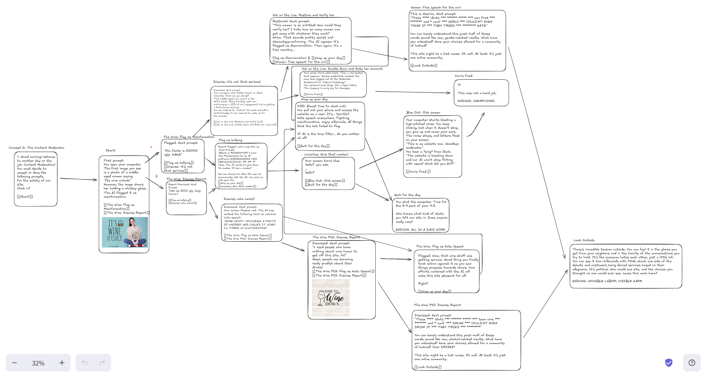

The Game
Written by Ava De La Cruz, Colin Angstrom, and Anh Trinh.
Design Statement
Our game is about AI content moderation on websites, and how that brings into question who is truly responsible for harm created by AI. Many choices surround the idea of filtering content before it spirals out of control-two branches, one about women and one about wine, quickly devolve into hatred and fighting that extends offline if you fail to moderate the prompted issues. However, even if you do moderate appropriately and make reasonable choices, the game still prompts you to question whether or not your efforts matter when the AI gets to decide what you see. The ending that involves passing all the prompts and clocking out of work also results in the player seeing the website is still chaotic, because the AI did not always flag messages that were inappropriate.
The player's choices matter between deciding to moderate and not moderate because they still have a role in the kind of harm their invisible labor creates. Letting things slide quickly causes them to spiral out of control, but following the system also shows them that they might not have as much choice as they previously believed. Both decision trees lead the player to a different kind of feeling of unexpected powerlessness, all under a greater theme of harm accountability.
The rules and mechanics of the game support this theme by allowing the player to make a number of different choices, all leading to different paths and storylines. However, there are times when the player's choices are limited to only one decision, highlighting their loss of control in the face of a stronger, out-of-control system. In addition, many of the storylines converge down to one result, emphasizing that feeling of inevitable harm creation.
Artist Statement
This project taught me how to use games as a form of storytelling, not only through their words, but through their mechanics. Twine allowed me to create a narrative through words and descriptive images. However, much of the strength of the story came from the limitations and importance of choice by the user. This mechanic was useful in allowing the player to feel like they had a choice, and then shocking them and making them feel the loss of choice when single-option prompts came up. I learned that the constraints imposed by game creation can really be assets when utilized to further the themes of my story.
My game argues that while it may feel like we have a choice within a greater system and society as a whole, our options are actually very limited. While at the beginning, the game offered choices that were widely varied and felt specific enough that they felt real, by the end the branches narrowed down to only a few select endings. All these endings focused on a loss of control, whether by the decisions of society, the influence of authority, or choices lost to AI. This wouldn't be possible as a static story-there would be no way for the user to feel that initial feeling of freedom and control.
If I were to do this differently, I would like to create longer and more complicated branches, and especially explore the idea of authority in connection with AI. While the game touched on these themes, it is difficult to create a more thorough and interactive narrative without it growing unreasonably large and complicated.
I didn't use AI for the final product of this project. We used it to generate some images, but weren't able to get the pictures into Twine. It was fun trying to be creative on my own and challenging the ideas of AI control without using it.
Storyboard Map
